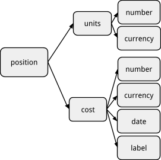

非官方中文译文 · 术语保留英文；代码、account、option、币种原样。 原文：https://beancount.github.io/docs/how_inventories_work/
Beancount 的 Inventory（库存）是如何运作的
面向 intermediate → advanced 读者 · 已使用 Beancount 一段时间、准备开始跟踪投资与成本基础的读者。
原文：Martin Blais，2016 年 12 月 来源：How Inventories Work 翻译原则：中文为主；
transaction、posting、directive、account、balance assertion、tolerance、precision、interpolation、cost、price、lot、booking、pad等术语保留英文。inventory、position、commodity、augmentation、reduction、cost basis等 Beancount 核心概念也保留英文，以便与代码和报表术语对齐。代码块、account 名、option 名、货币代码、链接、图片路径均保持原样。版本提示：本文写于 2016 年 12 月。文中多处标注 AVERAGE booking 与 trade 记录"尚未实现"；现代 Beancount（v2 起）已经实现了
booking_method "AVERAGE"，但 trade 的自动记录至今仍未完成。阅读时请以你实际使用的 Beancount 版本的 option reference 为准。
译者导读
这篇不是"如何写 transaction"的教程，而是解释 Beancount 最核心的内部机制：inventory。你记下的每一笔 posting，最终都要落到某个 account 的 inventory 里——Beancount 正是通过对 inventory 内容的聚合来计算余额、执行 balance assertion、跟踪 cost basis、并自动算出资本利得。理解了 inventory 与 booking，你就理解了 Beancount 为什么能"只记账、不手算投资回报"。
对高级用户，这一章真正值得带走的是：
- augmentation 与 reduction 是两套完全不同的语义。 买入（正号、带 cost）是"增补"，会新建一个 lot，并把你给的 cost、label、date 记到 lot 上；卖出（负号）是"减持"，你写的 cost/label/date 只是过滤条件，用来在现有 lot 里挑出要砍哪一个，被砍 lot 的真实 cost basis 会被回填。写反了会直接报 ambiguous match 错误。
- booking method 决定"多个 lot 匹配时怎么选"，直接决定你的资本利得。 默认 STRICT 遇到歧义就报错；FIFO/LIFO 按获得日期先后自动选 lot；AVERAGE 用平均成本（适合退休账户这类不计成本基础的场景）；NONE 干脆不合并、只保留总和。
- price 与 cost basis 是两回事。 做 balance 时，有 cost basis 就用 cost basis、不用 price；price 只是注解，供 plugin（
implicit_prices/sellgains）使用。这正是"资本利得能被自动算出来"的原因。 - 这是 Beancount 与 Ledger 的分水岭。 Ledger 只有 NONE 一种 booking 方式；Beancount 提供 STRICT/FIFO/LIFO/AVERAGE/NONE，让你能精确控制每一股的成本归属——这是做税务报告时最需要的能力。
本文说明我们如何累积 commodity，以及如何把卖出（reduction）与已累积的 inventory 内容相匹配。
引言
除了能够跟踪并列出每个 account 上的 posting（这一操作会产生一个 journal，即条目流水）之外，Beancount 最常见、最有用的操作之一，就是对任意一组 posting 的 position 求和。这些聚合是 Beancount 工作原理的核心，它们实现于一个名为 "inventory"（库存）的对象中。本文解释这个聚合过程是如何工作的。如果你要跟踪投资，就有必要理解下面的内容。
匹配与 Booking Method
为了获得整体图景，让我们通过几个简单的例子走一遍各种 booking 特性。这样你可以一次性接触到所有主要概念。
简单 Posting —— 无 Cost
考虑对一个 account 的一组简单 posting，例如：
2016-04-24 * "Deposit check"
Assets:Bank:Checking 221.23 USD
…
2016-04-29 * "ATM Withdrawal"
Assets:Bank:Checking -100.00 USD
…
2016-04-29 * "Debit card payment"
Assets:Bank:Checking -45.67 USD
…
Checking account 的 inventory 初始为空。第一笔 transaction 之后，其内容为 221.23 USD。第二笔之后，为 121.23 USD。最后，第三笔 transaction 使余额变为 75.56 USD。这看起来非常自然；数字就是简单地相加。
这也许是显而易见的，但还要注意：数字允许改变符号（变为负数）。
多种 Commodity
一个 inventory 可以包含不止一种 commodity（商品，泛指货币、股票、基金份额等）。它等价于一个从 commodity 到某个单位数量的映射。例如：
2016-07-24 * "Dinner before leaving NYC"
Expenses:Restaurants 34.58 USD
…
2016-07-26 * "Food with friends after landing"
Expenses:Restaurants 62.11 CAD
…
这两笔 transaction 之后，Restaurants account 包含 34.58 USD 和 62.11 CAD。它的内容被称为混合 commodity。自然地，posting 只会应用到它们所影响的货币。例如，下面这笔 transaction
2016-07-27 * "Brunch"
Expenses:Restaurants 23.91 CAD
…
使该 account 的余额变为 34.58 USD 和 86.02 CAD。USD 的单位数量没有变化。
注意，account 可以包含任意数量的 commodity，这对于按 cost 持有的 commodity 也是如此，我们稍后会看到。虽然这是允许的，但我建议你定义足够的 account，让每个 account 只保留一种 commodity；这可以通过 "onecommodity" plugin 来强制。
Cost Basis（成本基础）
当我们考虑用 cost basis 跟踪投资时，事情变得稍微复杂一些。Beancount 允许你将 cost basis 和一个可选的 label 与某个已获得的特定 lot 关联起来。考虑对投资 account 的两笔买入：
2015-04-01 * "Buy some shares of Hooli in April"
Assets:Invest 25 HOOL {23.00 USD, "first-lot"}
…
2015-05-01 * "Buy some more shares of Hooli in May"
Assets:Invest 35 HOOL {27.00 USD}
…
所以现在，投资 account 的 inventory 包含
units ccy cost cost-ccy lot-date label
25 HOOL {23.00 USD, 2015-04-01, "first-lot"}
35 HOOL {27.00 USD, 2015-05-01, None}
这两个 lot 没有合并，它们在 inventory 中仍然是两个独立的 position。只有当 commodity 以及其所有 cost 属性完全匹配时，inventory 才会合并 lot 并调整单位数。（实际上，两次 augmentation 具有相同 cost 和 date 属性是非常罕见的。）
注意 Beancount 如何自动将获得日期关联到每个 lot；如果你愿意，可以通过添加类似可选 label 的日期来覆盖它。这对于做 cost basis 调整很有用。
向 inventory 内容添加的 posting 被称为 augmentation（增持）。
Reduction（减持）
但是我们如何从 inventory 中移除 commodity 呢？
你可以通过卖出其中一部分来削减现有的 lot。做法是向 account 提交一个 reduction，像这样：
2015-05-15 * "Sell some shares"
Assets:Invest -12 HOOL {23.00 USD}
…
为明确起见，使这个 posting 成为 reduction 的，仅仅是符号（-）与该 commodity 的 account 余额（+25）相反这一事实。这个 posting 告诉 Beancount 找出所有 cost basis 为 23.00 USD 的 lot，并从中移除 12 个单位。得到的 inventory 将是
units ccy cost cost-ccy lot-date label
13 HOOL {23.00 USD, 2015-04-01, "first-lot"}
35 HOOL {27.00 USD, 2015-05-01, None}
注意第一个 posting 是如何被减少 12 个单位的。我们不需要指定 lot 的所有属性，只需指定 cost。我们也可以等效地使用 date 来指定要削减哪个 lot：
2015-05-15 * "Sell some shares"
Assets:Invest -12 HOOL {2015-04-01}
…
或者用 label：
2015-05-15 * "Sell some shares"
Assets:Invest -12 HOOL {"first-lot"}
…
或者它们的组合。任何属性组合都会与 inventory 内容匹配，以确定要削减哪个 lot。事实上，如果 inventory 恰好只有一个 lot，你可以这样削减它：
2015-05-15 * "Sell some shares"
Assets:Invest -12 HOOL {}
…
歧义匹配（Ambiguous Matches）
但是如果有多个 lot 匹配这个 reduction 会怎样？例如，用之前的包含两个 lot 的 inventory，如果你这样写卖出：
2015-05-15 * "Sell some shares"
Assets:Invest -12 HOOL {}
…
Beancount 将无法确定哪个 lot 需要被削减。我们遇到了一个 ambiguous match。
部分 ambiguous match 也是可能的。例如，如果你要从下面的 inventory 中削减：
units ccy cost cost-ccy lot-date label
25 HOOL {23.00 USD, 2015-04-01, None}
30 HOOL {25.00 USD, 2015-04-01, None}
35 HOOL {27.00 USD, 2015-05-01, None}
而你尝试这样削减：
2015-05-15 * "Sell some shares"
Assets:Invest -12 HOOL {2015-04-01}
…
前两个 lot 被选为匹配项。
STRICT booking
Beancount 如何处理 ambiguous match？默认情况下，它会产生一个 error。
更准确地说，发生的是 Beancount 调用 booking method，它根据设置来处理 ambiguous match。默认的 booking method 是 "STRICT"，它直接放弃并输出一个 error，告诉你需要细化输入以消除 inventory reduction 的歧义。
FIFO 与 LIFO Booking
还有其他可用的 booking method。它们可以通过 option 配置，像这样：
option "booking_method" "FIFO"
"FIFO" method 自动选择匹配 lot 中最旧的，直到满足 reduction 请求的规模。例如，给定我们之前的 inventory：
units ccy cost cost-ccy lot-date label
25 HOOL {23.00 USD, 2015-04-01, "first-lot"}
35 HOOL {27.00 USD, 2015-05-01, None}
尝试削减 28 股，像这样：
2015-05-15 * "Sell some shares"
Assets:Invest -28 HOOL {}
…
会匹配两个 lot，将第一个完全减为零，并从第二个 lot 中移除剩余的 3 个单位，得到如下 inventory：
units ccy cost cost-ccy lot-date label
32 HOOL {27.00 USD, 2015-05-01, None}
"LIFO" method 工作方式类似，但首先消耗最新（最晚）的 lot，按时间倒序工作以移除数量。
按 Account 设置 Booking Method
你不必让所有 account 都遵循相同的 booking method；上一节的 option 设置的是所有 account 的默认 method。要为特定 account 覆盖 booking method，可以在该 account 的 Open directive 上使用一个可选的字符串 option，像这样：
2014-01-01 open Assets:Invest "FIFO"
这允许你以不同的 booking 解析方式处理不同的 account。
完全匹配（Total Matches）
strict booking 有一个例外：如果整个 inventory 恰好被削减了总的单位数，那么显然所有匹配的 lot 都要被选中，这被认为是无歧义的，即使在 "STRICT" booking 下也是如此。例如，在 "STRICT" booking 下，下面这个 reduction 会清空之前的 inventory 而不报错，因为匹配的有 25 + 35 股：
2015-05-15 * "Sell all my shares"
Assets:Invest -60 HOOL {}
…
AVERAGE booking
由政府激励计划创建的退休账户（如美国的 401k 计划或加拿大的 RRSP）通常包含税前资金。对于这类账户，券商通常忽略 cost basis 的计算，因为税收是在资金转出账户时才征收。这些账户通常被管理到完全投资的程度；因此，费用通常以投资组合的份额形式收取，按费用支付当天的价格计价。这使得跟踪各个 lot 的 cost basis 变得麻烦。
正确的做法是分别处理每种 commodity 的整套 lot 的单位数量和 cost basis。例如，下面两笔 transaction：
2016-07-28 * "Buy some shares of retirement fund"
Assets:Invest 45.0045 VBMPX {11.11 USD}
…
2016-10-12 * "Buy some shares of retirement fund"
Assets:Invest 54.5951 VBMPX {10.99 USD}
…
应该得到一个单一 lot，具有总单位数和平均 cost：
units ccy cost cost-ccy lot-date label
99.5996 VBMPX {11.0442 USD, 2016-07-28, None}
在该账户中收取的费用可能看起来像这样：
2016-12-30 * "Quarterly management fee"
Assets:Invest -1.4154 VBMPX {10.59 USD}
Expenses:Fees
即使是负单位数，数量和 cost 也会被分别聚合：
units ccy cost cost-ccy lot-date label
98.1842 VBMPX {11.0508 USD, 2016-07-28, None}
| 这个 feature 目前尚未在 Beancount 中支持；它实现起来相当棘手，将作为未来某个 minor release 的主题。 |
译者注 · 版本
上面方框里"尚未支持"的说法是 2016 年的状态。现代 Beancount（v2 起）已经实现了 AVERAGE booking，可以用option "booking_method" "AVERAGE"或opendirective 上的"AVERAGE"启用。此处原文描述的平均成本合并逻辑，如今已可实际使用。
NONE Booking（禁用 Booking）
不过，同时还有另一种处理非应税账户的方法：你可以简单地禁用 booking。有一个名为 "NONE" 的 booking method，它实现了一种非常宽松的策略，接受任何新 lot。新 lot 总是无条件地追加到 inventory。对上一节的 transaction 使用这个策略会得到这样的 inventory：
units ccy cost cost-ccy lot-date label
45.0045 VBMPX {11.11 USD, 2016-07-28, None}
54.5951 VBMPX {10.99 USD, 2016-10-12, None}
-1.4154 VBMPX {10.59 USD, 2016-12-30, None}
观察得到的 inventory 是如何混合符号的；通常这是不允许的，但在这种退化的 booking method 下是被容忍的。注意，在这种 method 下，唯一有意义的数值是单位总数和 cost 的总额或平均值。各个 lot 并不真正是 lot，它们只代表对该 account 所做的所有 posting 的列表。
注意：如果你熟悉 Ledger，这是它支持的默认且唯一的 booking method。
小结
总之，以下是我们演示的内容。Augmentation 从来不会有问题；它们总是向现有 inventory 添加新的 position。另一方面，reduction 可能导致几种结果：
-
单一匹配。 只有一个 position 匹配 reduction；它被削减。
-
完全匹配。 请求的总单位数恰好等于被匹配 position 的总单位数。这些 position 被削减为零。
-
无匹配。 没有任何 position 匹配 reducing posting。会报出 error。
- 歧义匹配。 inventory 中不止一个 position 匹配 reducing posting；此时调用 booking method 来处理。
有几种 booking method 可用于处理最后一种情况：
-
STRICT。 报出 error。
-
FIFO。 从最旧（最早）的 lot 中取单位，直到 reduction 完成。
-
LIFO。 从最新（最晚）的 lot 中取单位，直到 reduction 完成。
-
NONE。 禁用 booking；reducing lot 被简单地加入 inventory。这会产生一个混合符号的 inventory，只有单位总数和 cost basis 总额是有意义的数值。
注意，下面这个尚未支持，但可能出现在未来版本中：
- AVERAGE。 每次 reduction 之后，受影响 commodity 的所有单位被合并，并重新计算其新的平均 cost。
Beancount 为所有 account 提供一个默认 booking method，可以用 option 覆盖：
option "booking_method" "FIFO"
booking method 的默认值是 "STRICT"。我建议你保持它不变，并只为特定 account 覆盖 booking method。
可以通过在 account 的 Open directive 上添加一个字符串来为每个 account 指定 method：
2016-05-01 open Assets:Vanguard:RGAGX "AVERAGE"
Price 是如何被使用的
简短的回答是：price 根本不被使用，也不影响 booking 算法。不过，讨论它们在这个语境下做了什么是有意义的，因为用户总是对它们的解释感到困惑。
price 有两个使用场景：在 commodity 之间进行换算，以及给 reducing lot 打上其卖价的标签，以便记录并可选地平衡所得款项。
Commodity 换算
换算用于将一种货币兑换成另一种。它们看起来像这样：
2016-04-24 * "Deposit check"
Assets:Bank:Checking 220.00 USD @ 1.3 CAD
Income:Payment -286.00 CAD
就把它 book 到 Checking account 的 inventory 而言，附带 price 的 posting 与没有 price 时处理方式完全相同：Checking account 只是收到一笔 220.00 单位 USD 的存款，并将与 commodity "USD" 的 position 匹配。price 仅用于验证 transaction 是否平衡，确保复式记账规则得到遵守（220.00 x 1.3 CAD + -286.00 CAD = 0.00）。除此之外，它在修改 inventory 内容时被忽略。在某种意义上，posting 被应用到 account inventory 之后，price 就被遗忘了，inventory 余额不保留任何关于这笔存款来自换算的记忆。
Price 与 Cost Basis 的区别
有人可能会问，如果存在 cost basis 说明，price 是如何被使用的，像这样：
2015-05-15 * "Sell some shares"
Assets:Invest:HOOL -12 HOOL {23.00 USD} @ 24.70 USD
Assets:Invest:Cash 296.40 USD
Income:Invest:Gains
答案常常让很多用户感到惊讶：如果存在 cost basis，balance 算法不使用 price；用于平衡 posting 的数字是 cost basis。这是一个有用的特性，使我们能够自动计算资本利得。在前面的例子中，balance 算法会求和 -12 x 23.00 + 296.40 = -20.40 USD，这就是资本利得，(24.70 - 23.00) * 12。它会补全最后一个 posting 并为其赋这个值。
一般来说，计算销售利润的方式是用所得款项（即现金存款）来权衡所卖 lot 的 cost basis，这足以确立利得差额。另外，如果一个 augmenting posting 恰好带有 price 注解，它同样不被使用。
price 是供你记录的注解。它保留在 Posting 对象上，如果你想以某种方式使用它，随时可以通过写一些 Python 代码实现。已经有两个 plugin 使用了这个注解：
-
beancount.plugins.implicit_prices：这个 plugin 取出 posting 上附带的 price，自动为每个 price 创建并插入 Price directive，以填充全局 price database。
-
beancount.plugins.sellgains：这个 plugin 实现了一个额外的 balance 检查：它用 price 计算预期所得款项，并与该 transaction 的其他所有 posting 权衡，排除任何 Income account 的 posting。在我们的例子中，它会检查 (-12 x 24.70 + 296.40) = 0。这提供了另一种验证输入正确性的手段。
有关这个主题的更多细节，请参见 Trading with Beancount 文档。
Trades（交易）
获得某项资产再将其卖回，这种组合就是我们所称的 "trade"。在 Beancount 中，我们只考虑带有 cost basis 的资产作为 trade 的对象。由于在 booking 过程中会把 reduction 与累积的 inventory 内容相匹配，因此 trade 应该在这里被识别和记录。
截至目前 [2016 年 12 月]，trade 记录尚未实现。 此前已经测试过一些原型，我相信在不久的将来会很容易加上。届时将在这里记录。敬请关注。 |
trade 的实现方式将是：允许 booking 过程在 transaction 流中，向 augmenting 和 reducing posting 双方插入带唯一 UUID 的匹配 metadata。将提供函数和报表，能够轻松提取每个 reducing posting 的 posting 对，并以不同方式过滤它们。最终，你应该能够将所有 trade 的列表提取到一个表格中，包含获得价和卖出价，以及其他费用。
译者注 · 版本
截至本文撰写时 trade 自动记录仍未实现，上面的方框内容至今仍然成立。若你需要成对的买卖记录，目前仍需要自行用脚本或 plugin 从 posting 的 cost/label 信息中提取。
调试 Booking 问题
如果你在记录卖出时因为匹配过程遇到困难，有一些工具可以让你查看某个 account 在应用某笔 Transaction 前后的详细 inventory 内容。为此，你可以使用 bean-doctor 命令。你调用该程序时提供文件和你想要选择的 Transaction 附近的文件与行号，像这样：
bean-doctor context <filename> <line-no>
得到的输出会显示所有受影响 account 在该 transaction 应用之前的 inventory 内容列表，包括完整呈现的 cost basis、获得日期和可选 label。注意，一些失败通常是通过丢弃无效 Transaction 的影响来处理的（但绝不会悄悄地处理）。
在 Emacs 或 VI 中，将光标放在 transaction 附近并调用相应命令是最容易的调用方式，因为它会自动插入行号。
附录
本文的其余部分深入更技术性的细节。你完全可以忽略这一部分，它不是理解 Beancount 工作方式所必需的阅读。只有当你对细节感兴趣时才需要费心。
数据表示
了解 position 在 inventory 对象中如何表示是很有用的。一个 Position 本质上是某种 commodity 的一定数量的单位，附带一些关于其获得情况的可选信息：
-
Cost。 其每单位获得成本（"cost basis"）。
-
Date。 这些单位被获得的日期。
-
Label。 某个用户指定的 label，可用于引用该 lot。
我们经常把这些 position 对象称为 "lot" 或 "leg"。示意性地，一个 position 对象看起来像这样：

Position 对象的结构。
有两种不同类型的 position，在接下来的小节中详细讨论：
-
Simple positions。 这些是没有 cost basis 的 position。"cost" 属性被设为 null 值（Python 中的 "
None"）。 -
Positions held at cost。 这些是带有相关 cost basis 和获得细节的 position。
一个 Inventory 就是这些 position 的累积，表示为一个列表。我们有时谈论 ante-inventory 来指代 transaction 的 posting 应用之前的 inventory 内容，用 ex-inventory 指代应用之后的最终 inventory。
一个 Posting 是一个 position 的超集对象：除了单位和 cost 之外，它还有一个关联的 account 和一个可选的 price 属性。如果存在，price 与 units 的类型相同。它代表输入中 transaction 的一条 leg。Posting 蕴含 position，这些 position 被添加到 inventory 中。我们可以说一个 position 被 posted 到某个 account。
关于 Beancount 内部数据结构的更多细节，请参考 Design Doc，它进一步展开了这个主题。
为什么 Booking 并不简单
reduction 过程的复杂性体现在：我们如何跟踪各个 lot 的 cost basis。为了演示这一点，让我们考虑一个简单的例子，我们将在下面不同的小节中复用它：
-
4 月 1 日以 $23/股买入 25 股。
-
5 月 1 日以 $27/股买入 35 股。
-
5 月 15 日卖出 30 股；当时价格为 $26/股。
我们现在忽略佣金，它们不会引入额外的复杂性。在 Beancount 中，这个场景会这样记录：
2015-04-01 * "Buy some shares of Hooli in April"
Assets:Invest:HOOL 25 HOOL {23.00 USD}
Assets:Invest:Cash -575.00 USD
2015-05-01 * "Buy some more shares of Hooli in May"
Assets:Invest:HOOL 35 HOOL {27.00 USD}
Assets:Invest:Cash -945.00 USD
2015-05-15 * "Sell 30 shares"
Assets:Invest:HOOL -30 HOOL {...} @ 26.00 USD
Assets:Invest:Cash 780.00 USD
Income:Invest:HOOL:Gains
现在，整个问题围绕着哪些股份被选中卖出。我把这个输入渲染成了红色省略号（"…"）。用户在那个位置填写的任何内容都将用于确定我们想使用哪个 lot。
我们选择卖出哪个（些）lot，将决定利得的金额，因为那是这些股份 cost basis 的函数。这就是它重要的原因。
Augmentation 与 Reduction
最重要的观察是，有两种不同的 lot 说明，它们在输入中看起来非常相似，但处理方式截然不同。
当我们买入时，如上面的第一笔 transaction，{...} cost basis 语法向 Beancount 提供关于一个新 lot 的信息：
2015-05-01 * "Buy some more shares of Hooli in May"
Assets:Invest:HOOL 35 HOOL {27.00 USD}
Assets:Invest:Cash -945.00 USD
我们称之为对 inventory 的 "augmentation"，因为它会简单地向其中添加一个新的 position。你提供的 cost basis 被附加到这个 position 上，并在 inventory 中随时间的推移而保留。此外，你还可以为 augmenting lot 提供一些其他数据。让我们看看 cost 说明中可提供的所有数据：
- Cost basis。 这包括每单位和总 cost 数字——它们合并为一个单一的每单位数字——以及一种货币。
-
获得日期。 一个 lot 有一个获得日期。默认情况下，其父 transaction 的日期会被自动设为其获得日期。你可以通过提供一个日期来覆盖它。这在处理股票拆分（stock split）或 wash sale、以及保留替换股份的原始获得日期时很有用，我们稍后会看到。
-
Label。 你可以为它提供一个唯一的 label，以便稍后卖出其中一部分或全部时更容易引用它。
-
Merge。 一个指示符（flag），表示该 lot 应该被合并（这对稍后将实现的 average cost booking 有用）。
对于一个 augmenting posting，这些信息必须要么提供，要么自动推断。它们可以以任意顺序提供：
2015-05-01 * "Buy some more shares of Hooli in May"
Assets:Invest:HOOL 35 HOOL {2015-04-25, 27.00 USD, "hooli-123"}
Assets:Invest:Cash -945.00 USD
如果你省略 date，Transaction 的 date 会被附加给它。如果你省略 cost，其余的 posting 必须填写，以便从它们推断出 cost 金额。由于 label 本来就是可选的，未指定的 label 字段留空（null 值）。
你可能会问为什么允许覆盖 augmentation 的 date；在做 cost basis 调整以保留 posting 的原始获得日期时很有用：你移除该 posting，然后用其原始日期和新的 cost basis 替换它。
现在，当我们卖出这些股份时，我们将把这个 posting 称为 "reducing" posting，即一个 "reduction"。注意，"augmenting" 和 "reducing" 这些术语只是我在设计 Beancount 处理 inventory 的语境中创造的术语；它们不是通用的会计术语。
它是 "reduction"，因为我们在从截至其 transaction 日期为止累积的 inventory 中移除股份。例如，如果我们从那个 35 股的 lot 中卖出 30 股，输入可能看起来像这样：
2015-05-15 * "Sell 30 shares"
Assets:Invest:HOOL -30 HOOL {27.00 USD} @ 26.00 USD
Assets:Invest:Cash 780.00 USD
Income:Invest:HOOL:Gains
虽然输入看起来与 augmenting posting 相同，但 Beancount 的处理方式截然不同：它查看应用 transaction 之前 account inventory 的状态，找出所有与你提供的 lot 数据匹配的 position。然后它使用匹配 lot 的细节作为 reducing posting 的 cost basis 信息。
在这个例子中，它会简单地匹配所有 cost basis 为 $27.00 的 position。这个例子卖出前的 inventory 包含一个单一的 35 股 @ $27.00 的 lot，所以有一个 position 匹配它，该 lot 被削减 30 股，剩下 5 股。我们稍后会看到多个 lot 匹配说明时会发生什么。
注意，你也可以提供 lot 信息的其他子集来匹配，例如只提供 label：
2015-05-15 * "Sell 30 shares"
Assets:Invest:HOOL -30 HOOL {"hooli-123"} @ 26.00 USD
Assets:Invest:Cash 780.00 USD
Income:Invest:HOOL:Gains
这也是识别你想要削减的特定 lot 的有效方式。如果你在这里提供了 date，它也只会用于与 inventory 内容匹配，以区分在不同日期获得的 lot，而不会把 date 附加到任何地方。此外，如果 inventory 中只有一个 lot，你也可以只提供一个空的 cost basis 说明，像这样："{}"。下面的 Booking Method 一节将深入探讨当匹配 ambiguous 时会发生什么。
总之：
-
当你向 account 的 inventory 添加（augmenting）时，你提供的信息用于创建一个新的 lot 并附加到它上面。
-
当你从 account 的 inventory 移除（reducing）时，你提供的信息用于过滤 inventory 内容，选择要削减哪个（些）lot，而所选 lot 的信息会被填入。
同质与混合 Inventory
到目前为止，在例子中以及文档中的绝大多数例子中，"augmenting" 意味着添加正数量的股份。但在 Beancount 中，很多 account 通常有负余额，例如负债 account。公平的问题是：持有负余额的按 cost 持有的 commodity 是否有意义。
答案是肯定的。这些对应于 "short"（做空）position。大多数人不太可能卖空，但 Beancount 的 inventory 支持它。我们如何定义 "augmenting" 是相对于特定 commodity 的现有 lot 余额而言的。例如，如果一个 account 的 inventory 包含以下 position：
25 HOOL {23.00 USD, 2016-04-01}
35 HOOL {27.00 USD, 2016-05-01}
那么 "adding" 意味着正数量的股份。另一方面，如果 account 只包含 short position，像这样：
-20 HOOL {23.00 USD, 2016-04-15}
-10 HOOL {27.00 USD, 2016-05-15}
那么 "adding" 意味着负数量的股份，而 "reducing" 将通过用正数量的股份来匹配执行。
上面描绘的两个 inventory 在 HOOL 单位上是同质的，即所有 position 具有相同的符号。对于我们将看到的大多数 booking method，Beancount 使其无法创建非同质（即 "mixed"）inventory。但 "NONE" method 允许。例如，一个 mixed inventory 可能有以下内容：
25 HOOL {23.00 USD, 2016-04-01}
-20 HOOL {23.00 USD, 2016-04-15}
正如你可能直觉到的，"augmenting" 或 "reducing" 的概念只对 homogeneous inventory 有意义。
原始 Proposal
如果你对导致这个实现的 design doc 感兴趣，可以在这里找到文档。我希望最终的实现既足够简单又足够通用。
版权与许可：原文 © Martin Blais / beancount/docs contributors，MIT License。中文翻译为非官方 derivative work，仅供个人学习；详见 NOTICE.md。